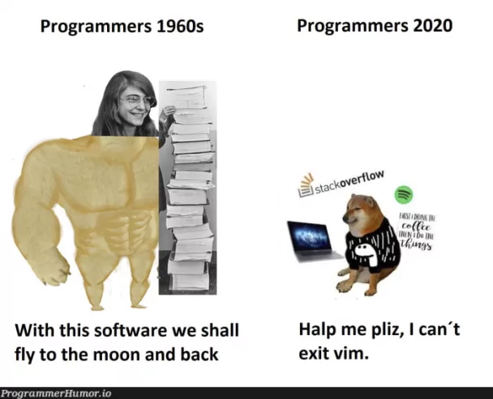
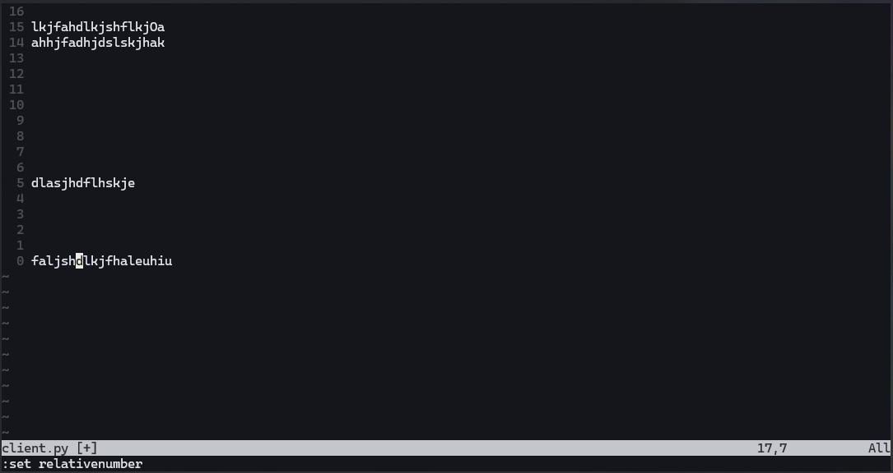
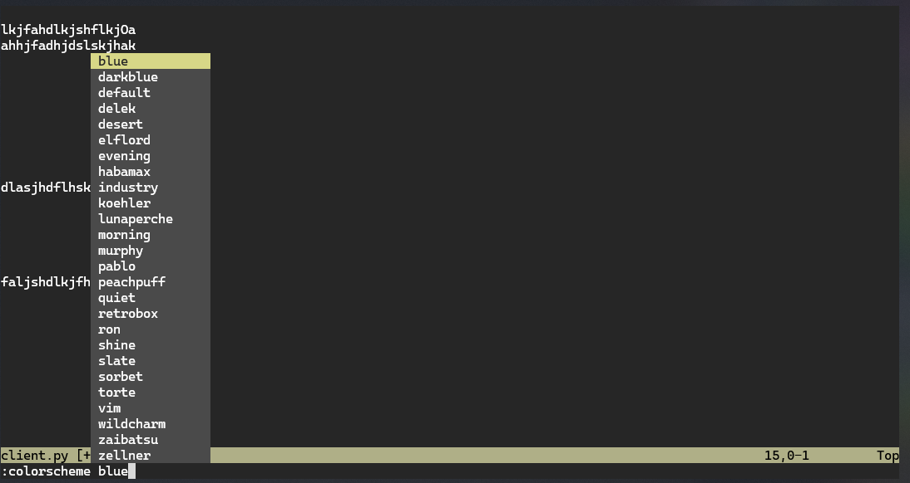

source: Vim tutorial for Beginners by freeCodeCamp.
in an effort not to give Vim up from the very first day. inspired by James Powell’s Vim skill in his every Python lecture.
after a few days of rolling with neovim i already have a somewhat calls sense of how to install, make the nvim config folder, do some git clone stuffs to download a bunch of i have no idea what they are to use vim in my damn window machine. can do nvim file1, :qw, :below terminal, :vsplit, but in general lots of actions i am not yet familiar with so actually could not stick with this editor.
now back to basics, i am spending Friyay night starting from scratch. Florian Dedov uses vim while i use nvim expecting both to be the same.

intro & why vim?
- less stick with your mouse, speed up your coding speed;
- all settings are customizable;
- dont need to stick with your terminal, you can use Vim keybindings in any IDE or text editor: Jupyter Notebook, VS Code, etc
installation
- i use window, i dont want to install more package manager like
scoop, i dont like to use WSL, so just simply runwinget install Neovim.Neovim; - this neovim version will not include Neovim QT, alright, i will use my terminal
pwsh;
basics
nvim file_namewill open a file or create a file if it did not exist (but the file will not be actually created if we dont write:w~ this is just buffer);
exit
- now if we create a file (e.g.
client.py), when we press:qin will return this message:
E37: No write since last change
E162: No write since last change for buffer "client.py" - what you need to do is
:q!(exclamation mark ~ saying you quite and dismiss any change you’ve made); - notice that
qfirst and!after.:!will open the terminal, so:!qwill pass the commandqto the terminal (window CMD), which returns “‘q’ is not recognized as an internal or external command, operable program or batch file.”
insert and normal modes
- when we enter vim, we are in NORMAL mode. press the
iorIwill get you into the INSERT mode, pressescto enter the NORMAL mode; - INSERT mode: any thing we press does not have functionality, just text;
- NORMAL mode: execute a command;
- in normal mode, press
:wto save/write file; :wqwrite and quit;- in INSERT mode, cursor points between 2 characters; in NORMAL mode cursor points a character;
- from INSERT mode, press
escand cursor will point to the up-front character, pressiin the cursor will point to before that character, pressaand for cursor after character; I = shift + iwill let you get into insert mode with cursor at the begin of the line;A = shift + afor the end of the line;- from normal mode,
olet you create a new line below and cursor at that line; O = shift + ofor creating line above.
line numbers
- in normal mode,
:set numberwill activate line number; :set nonumberto turn off the line number;- now this is important pattern: “an action can be repeated x times” ~ in normal mode we can move cursor up and down using up and down arrow -> if we press
5 + down arrowwe will move to the 5th line below; 10 + right arrowwill move the cursor to 10th character to the right, in the same line (?, or in the end of the line);- you can also use
h,j,k,linstead of the arrow keys, they stand for⬅,⬇,⬆,➡, respectively (extremely usefull if you can type with 10 fingers);
relative line numbers
- certainly you can use number with
h,j,k,l. now if you:set relativenumber, you can have your current line indexed as0and easily know the number to move up & down-ward;

14 + k i will move to the 3rd line- easy to know that
:set norelativenumberwill turn this option off.
various options
:set mouse=aactivate the mouse, you can scroll or select text;:set mouse-=ato inactivate, the pattern-=is to inactivate any option;:set tabstop=4set tab as 4 spaces:set shiftwidth=4set shift width as 4 spaces:colorscheme slateto set the color scheme, before type “state” you can tab to select the scheme too (remember the space);

:colorscheme and tab to select color scheme- every single time you close and re-open vim, these settings is by far - all gone.
.vimrc
- so you need a configuration file and every time vim or nvim is opened your config will be loaded;
- neovim will lookfor
init.vimorinit.luawhen start; - in terminal (pwsn in user folder window), input:
- then i set these config in my
init.vimfile:
set number
set relativenumber
set tabstop=4
set shiftwidth=4
set autoindent
set mouse=a
colorscheme slate- then
:wq. now we’ve already have some handy settings when go into nvim.
keybindings
| Keybindings | Actions |
|---|---|
u |
undid the actions, vim show “… change; before #x xx seconds ago” |
Ctrl + R |
redo |
|
repeat to press u for multiple undo, or you can 3 + u for 3 times undo. same for redo |
i, I, a, A, o, O |
back to insert mode in different ways |
v |
enter VISUAL mode |
V |
enter VISUAL model and select the whole line |
d |
deleting |
y |
yanking ~ equivalent to copying |
p |
pasting what we yank before (after or below the cursor) |
dd |
delete the whole line |
5dd |
delete the next whole 5 lines |
D |
delete from the cursor to the end of line |
yy |
yank the full line in NORMAL mode, same with V then y ~ select the whole line and yank |
Y |
same at yy |
P |
pasting what we yank before (before or above the cursor)
Tip
again remember the pattern of lowercase and uppercase |
c |
delete the selection (from VISUAL mode) and enter to INSERT mode |
cc |
delete the whole text in the line (the line was kept) enter to INSERT mode |
C |
delete from cursor to end of line (what c does is change, what d does is delete) |
r |
replacing the current cursor in NORMAL mode with 1 character press after replacing all selection (include cursor) in VISUAL mode |
w |
Jump to the next word (split by space or “-”) |
W |
Jump to the next word (accept only space at delimiter) |
b, B |
The same thing for backward |
dw |
delete a word |
2dw , d2w |
delete 2 words (forward, current cursor and the next one) |
2db, d2b |
delete 2 words (backward, before the cursor) |
diw |
delete in a words |
ciw , cw, cb |
change in a words, next word, previous word and go into INSERT mode |
e |
Jump to the end of the word (E will be more strictly, only accept space as delimiter) |
0, $ |
Jump to the begin / and the end of the line respectively |
d0, d$ |
delete everything from cursor to the begin / end of the line, respectively -> think of |
:h ... |
seek help, :q to quite the help window |
intermediate stuff
go and cook your meal:
i- before andI- beginning,a- after andA- ending for navigating to INSERT mode;o- below,O- above to insert line;u- undo,Ctrl + R- redo;v- individual visual,V- visual the whole line;y- yanking current,Y,yy- yanking whole line;p- pasting after or below,P- pasting before or above;d- deleting current,dd- deleting whole line,D- deleting to the end of line;c- same withdbut for changing;r- replacing current with 1 character,R- enter the REPLACE mode and replace with multiple characters;w,W- jump word forward,b,B- jump word backward;i- inside the word,e- end of the word;0- begin,$- end of the line;repeat by press key multiple times or
n- number before command;%- jump to the closing bracket if you are on the opening one;tfollow by a character will let you jump cursor to before the next nearest one;fsame witht, but to the character’s position;TandFfor the backward;gg- go to the begin of the line,Gfor the end of the file;123Gor:123will bring you to the line 123; ….
now:
ciw- changing the whole word; butcib,ciB- changing the text inside the current set of parenthesis () or braces {}, respectively, you can alsoci(,ci{,ci<for the specific.ci"- changing the text inside double quote;if you want delete
d, or yanky- replace thec;5dwwill delete 5 words,5d5wwill delete 5 words 5 times!;5yycopying 5 lines;dt(deleting everything up till the opening bracket,df(will delete the bracket also; …
even more advanced stuff:
- indentation:
>>to the right,<<to the left; Vfor Visual Line mode, which will automatically select entire lines;Ctrl + vfor Block Visual mode, which will select rectangular regions of the text;=for auto indentation;gg=Gwill start at the begin of the file, auto indentation till the end of file (and end of at the end of file);/and word follow to search the word, thennto jump to the next found,Nto jump to the previous one;
Re-note about the search:
/pattern- search for pattern;?pattern- search backward for pattern;\vpattern- ‘very magic’ pattern: non-alphanumeric characters are interpreted as special regex symbols (no escaping needed);n- repeat search in same direction;N- repeat search in opposite direction;#go up,*go down.
ma: mark A -> to explore later;zz: centre the screen;:%s/old/new/g- replace all old with new throughout file;:%s/old/new/gc- replace all old with new throughout file with confirmations (withoutcis without confirmation);.repeat the last command;"+and"*are the special registers, which you copied in the system
registers and macros
ddeleting is also copying ~ cutting, so if youythendyou will lost the current clipboard:regto see the history of the clipboard;"7pwill paste the 7th register;"7yyyanks the whole line into 7th register;"0pthe last thing that i actually yanked, notd;qarecording macro @a,qquits recording;- you can see the macro in
:reg,@ato use the macro; …
neovim & plugins
- better, have more pluggins supported;
- config in
./nvimusinginit.vimorinit.lua;
vim support
- can use vim bindings in VS Code, Pycharm
outro
- it is recommended to use vim bindings while coding, even if you dont like the command line.